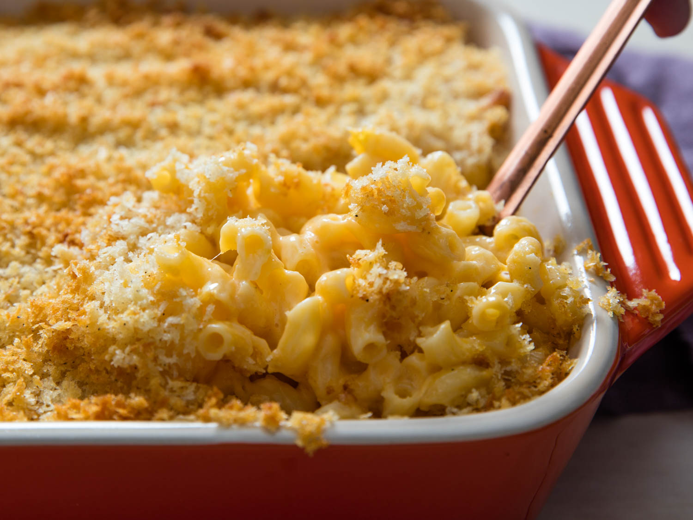

Alyssa Blank
For further instructions please email me: alyssa.blank@umontana.edu
Homemade Mac 'N Cheese
Source: All Recipes
Serves: Four

Ingredients List
- 8 Ounces Uncooked Elbow Macaroni
- 2 Cups Shredded Sharp Cheddar Cheese
- 1/2 Cup Grated Parmesean Cheese
- 3 Cups Milk
- 1/4 Cup Butter
- 2 1/2 Tablespoon All-Purpose Flour
- 2 Tablespoons Butter
- 1/2 Cup Breadcrumbs
- 1 Pinch of Paprika
Directions
Timeline
- Prep 20 Minutes
- Cook 30 Minutes
- Ready in 50 Minutes
- Cook macaroni according to the package directions.
- In a saucepan, melt butter or margarine over medium heat. Stir in enough flour to make a roux. Add milk to roux slowly, stirring contanstly. Stir in cheeses, and cook over low heat until cheese is melted and the sauce is a little thick. Put macaroni in large caserole dish, and pour sauce over macaroni.
- Melt butter or margarine in a skillet over medium heat. Add breadcrumbs and brown. Spread over the macaroni and cheese to cover.
- Sprinkle with a little Paprika.
- Bake at 350 degrees F (175 degrees C) for thirty minutes.
Food is an important part of a balanced diet.
-Fran Lebowitz
This quote is from Buzzfeed by Rachel Sanders and Chris Ritter
24 Best Ever Quotes About Food